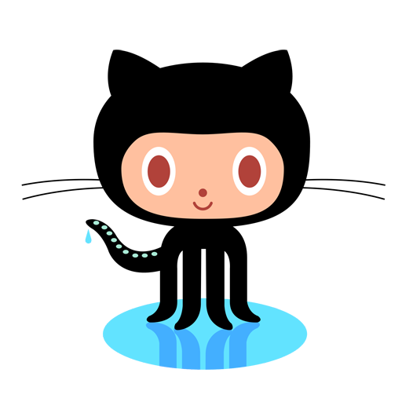

Alexey Kalenkoveс

Telegram:
@Ulfahedin
e-mail:
kalenkovetz@yandex.ru
Skills
- C/C++: basic knowledge of OOP;
- SQL: basic knowledge and practice in MySQL, MS SQL Server, Oracle Database;
- HTML/CSS/JavaScript: basic knowledge;
Additional skills
- SQL query;
- Shell and VBA basics;
- Microsoft Office;
- Android Studio;
- Rational Rose;
Education
From 2016 to the present time I am a 3rd year student of the Belarusian state University of Informatics and Radioelectronics at the Faculty of Information Technologies and Control.
English level
English level A2 (pre-intermediate). I take free online courses, read books, technical documentation, watch movies and lectures in English.
Summary
The primary aim for me is to benefit people in general and the company where I work. Here I can also include career growth. Motivated to learning new knowledge and skills. I am sociable and responsible so I can work in a team. I am always for self-development, training and improvement of my personal qualities and professional skills. I always strive for self-improvement.